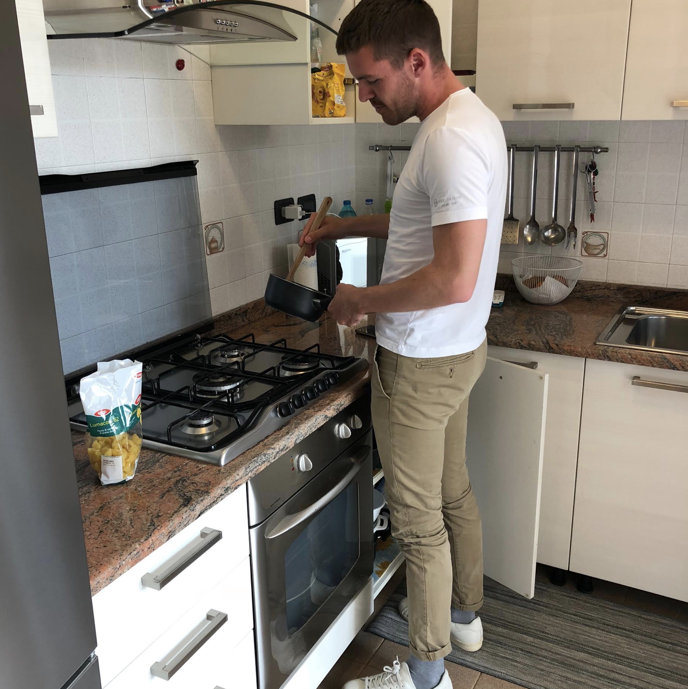
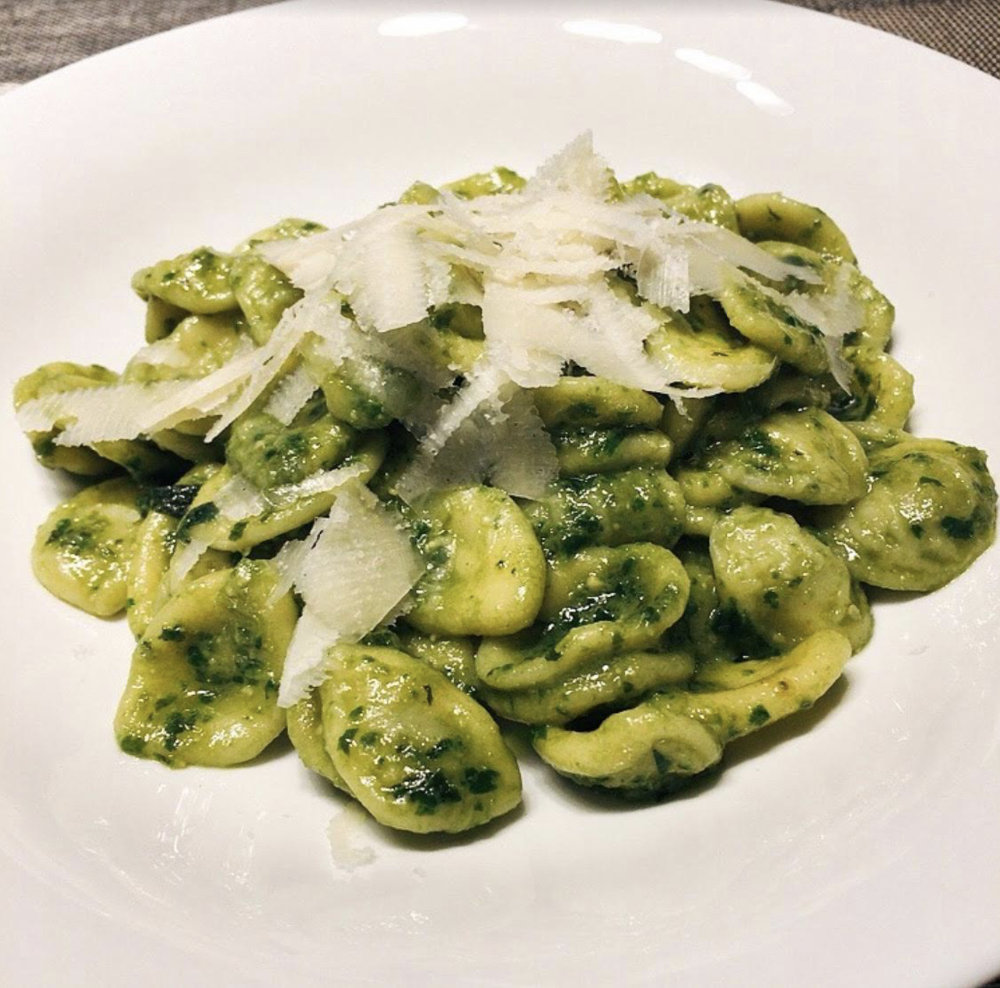
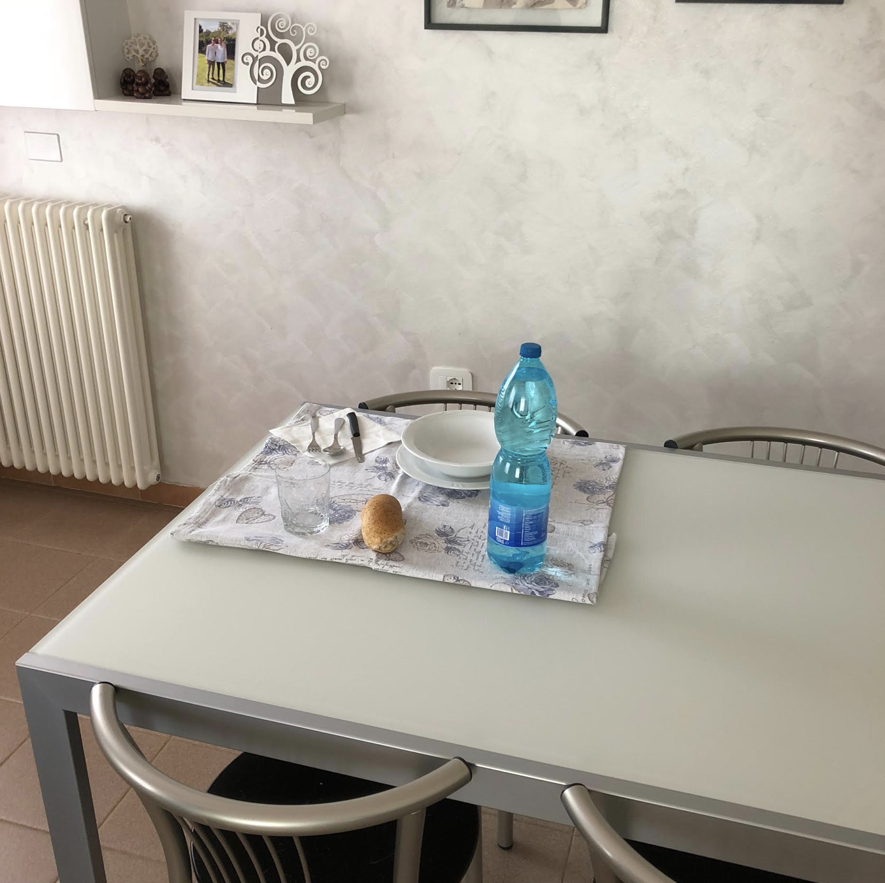
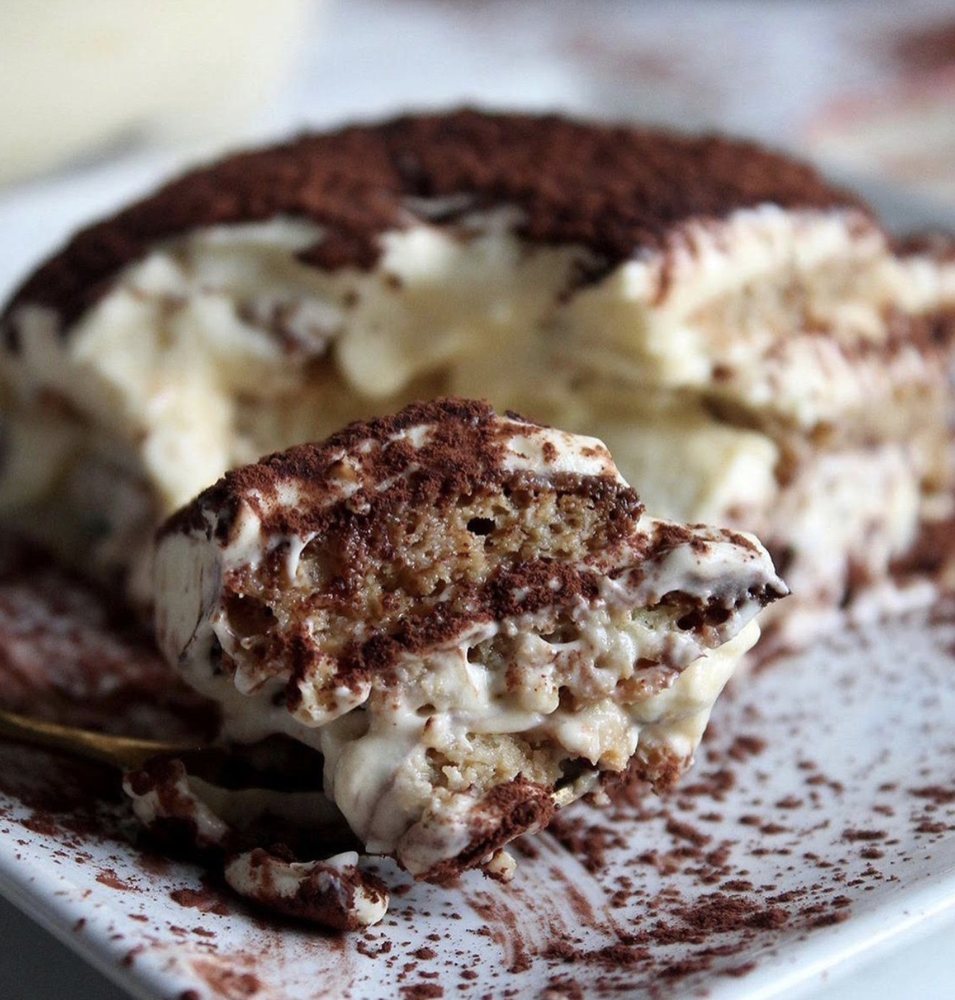

Declining the invitation to eat at your granmanonna 's in this day means that you have to cookcucinare by yourself and eat alone, as the rest of your family is working at the family restaurant.

What you're really great at doing, food-wise speaking, is pasta with pesto sauce, the easiest of all the pastas. You use, of course, the pre-made sauce that you buy at the supermarketsupermercato .
It is a bit sadtriste eating all alone at the end of the table, but there is not much that can be done. Not now, at least: you should have gone to granma's.

The positive thing of eating home alone is that your fatherpadre always leaves you a tiramisu in the fridge for you, which is professionally made by your unclezio Mirco, chef at your father's restaurant. So good.

After lunch you can either go with Manuel and Giulia to Lido beach where you will have dinner, or go to Chioggia with Irene, your best friend. What are you going to choose?